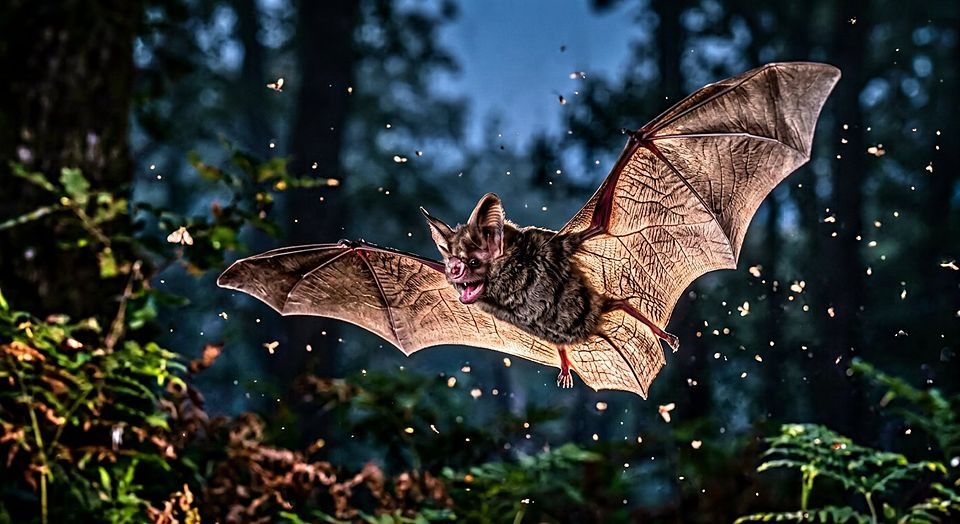

L’écholocation, un sens partagé
Émettre un son, écouter ce qui revient, et reconstruire la forme d’un objet invisible : ce calcul, que nos sonars industriels réalisent avec de lourds appareils, des animaux le font en vol, en nage, à quelques grammes.
Ce que cela ne dit pas L’étude fondatrice de 2011 ne portait que sur deux participants : elle démontre un mécanisme, elle n’établit pas une statistique.
Source primaire Thaler, L., Arnott, S. R. & Goodale, M. A. (2011). PLoS ONE 6(5): e20162 · doi:10.1371/journal.pone.0020162 Brinkløv, S., Elemans, C. P. H. & Ratcliffe, J. M. (2017). R. Soc. Open Sci. 4: 170255 · doi:10.1098/rsos.170255 Thomassen, H. A. et al. (2013). Front. Physiol. 4: 123 · doi:10.3389/fphys.2013.00123
Galerie 23 · Les systèmes du vivant · salle 15